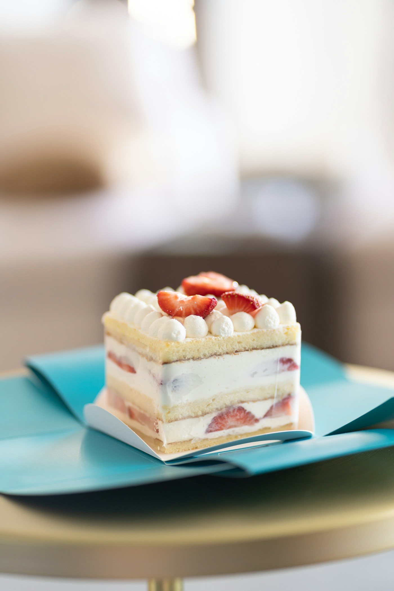

Альбина / Санкт-ПетербургМаленькие
Маленькие
сладкие
поводы.
Торты, моти, меренговые рулеты, шоколадные наборы и клубника в шоколаде — для себя и для тех, кого любите.
Написать кондитеру ↗
Приятноразделить
с близкими
Начните с маленького сообщенияУ каждого заказа
У каждого заказа
своя история.
Расскажите Альбине, к какой дате нужен десерт, сколько будет гостей и что вам нравится. Состав, условия получения и стоимость кондитер подтвердит лично.
Обсудить десерт в Telegram ↗Если есть пищевые ограничения, сообщите о них кондитеру до заказа.
КОНДИТЕРСКОЕ ПоЛе
Санкт-Петербург и областьМеню и работы в канале ↗
Санкт-Петербург и областьМеню и работы в канале ↗